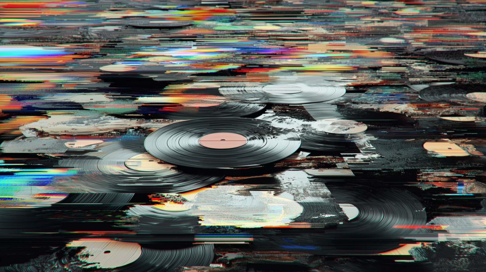
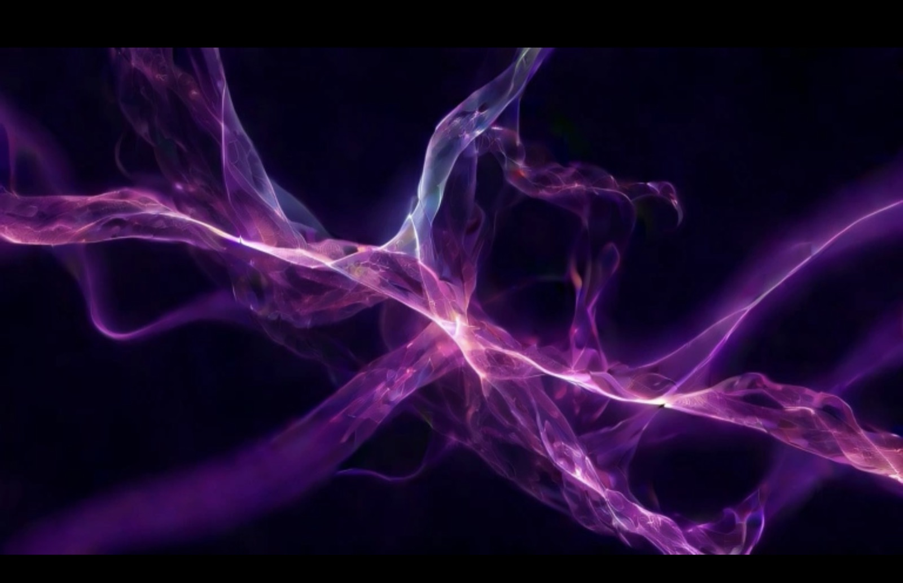
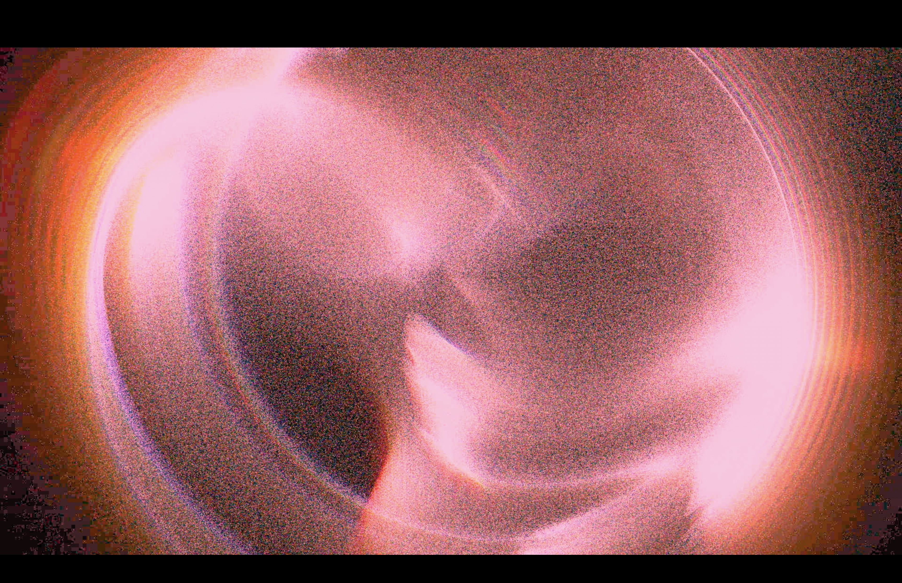
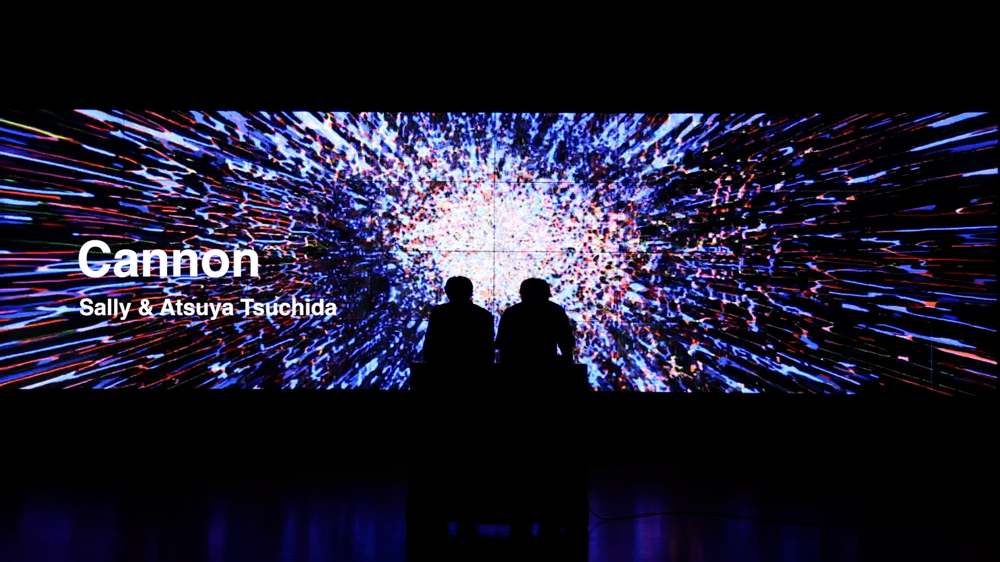
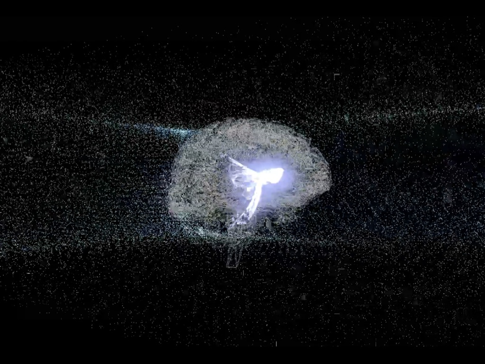
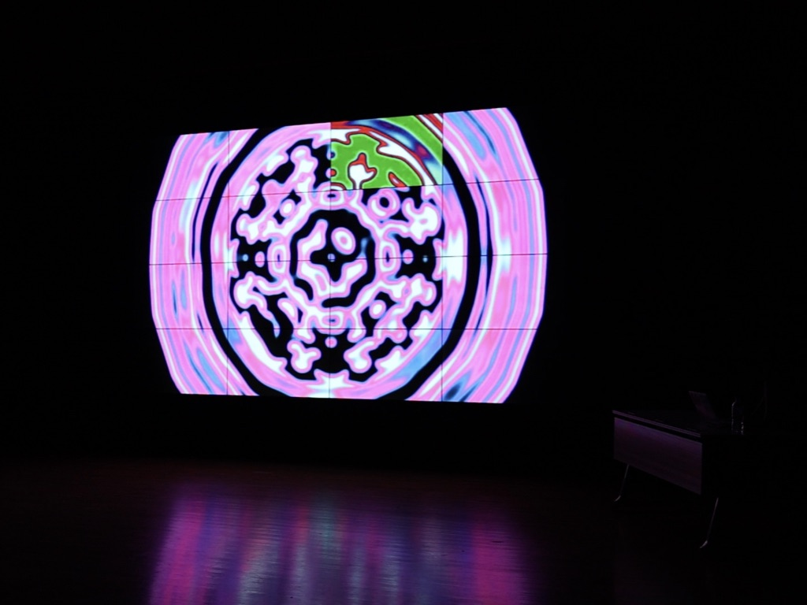
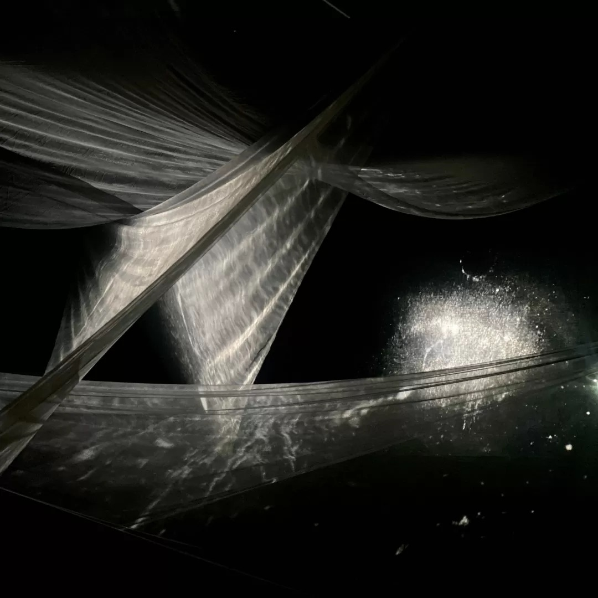

Gravitation
Gravitation
Works
Gravitation
 UNLABELED
UNLABELED

「続・創るためのAI」#5 Key Visual
Beyond2045_VJ
A/V Performance@sazareba transcriptions
transcriptions

Cannon
Reservoir Drum Machine Audio Visual Performances
Audio-Visual for Reaction-Diffusion
宇宙線観測 / sparklers